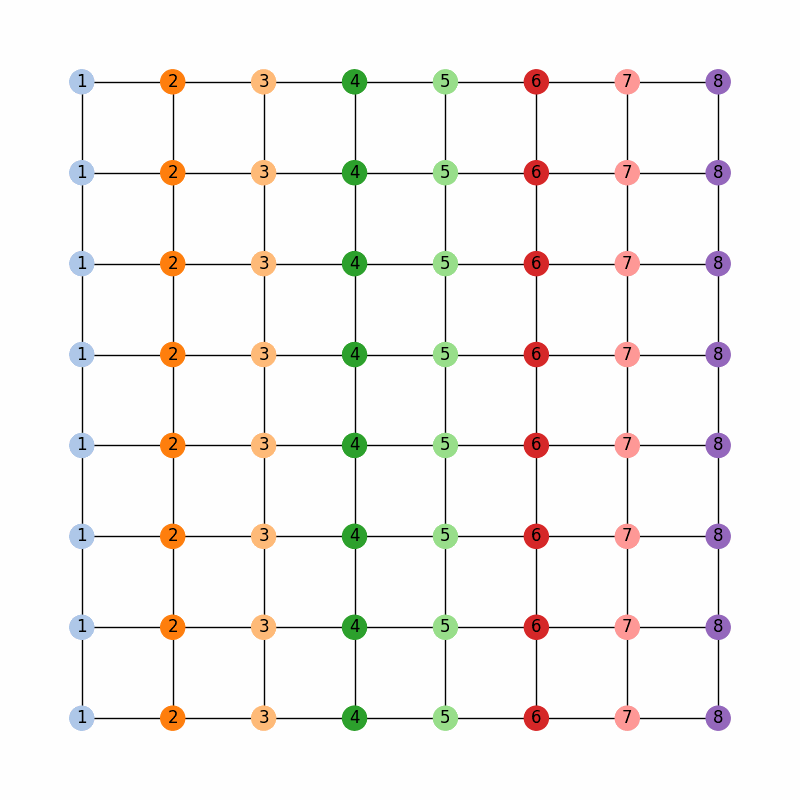
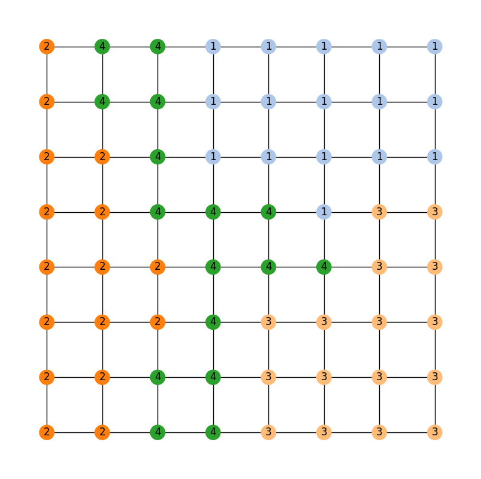

Running a chain with ReCom¶
Our goal now is to get a handle on using GerryChain to run Markov chains with both regular and region-aware settings. Throughout this guide, we’ll use the toy state of GerryMandria, which has needs to be divided into 8 districts.
The legislature of the state of GerryMandria has provided us with the following districting plan:

which has corresponding dual graph given by:

gerrychain works primarily with the dual graph of the districting plan, so
all of the pictures in this guide will use the dual graph as well.
A Simple Recom Chain¶
Let us start by running a simple ReCom chain on this districting plan. Of course, the first thing to do is to import the required packages:
import matplotlib.pyplot as plt
from gerrychain import (Partition, Graph, MarkovChain,
updaters, constraints, accept)
from gerrychain.proposals import recom
from gerrychain.constraints import contiguous
from functools import partial
import pandas
# Set the random seed so that the results are reproducible!
import random
random.seed(2024)
Now we set up the initial partition:
graph = Graph.from_json("./gerrymandria.json")
my_updaters = {
"population": updaters.Tally("TOTPOP"),
"cut_edges": updaters.cut_edges
}
initial_partition = Partition(
graph,
assignment="district",
updaters=my_updaters
)
And we make the proposal:
# This should be 8 since each district has 1 person in it.
# Note that the key "population" corresponds to the population updater
# that we defined above and not with the population column in the json file.
ideal_population = sum(initial_partition["population"].values()) / len(initial_partition)
proposal = partial(
recom,
pop_col="TOTPOP",
pop_target=ideal_population,
epsilon=0.01,
node_repeats=2
)
We can now set up the chain:
recom_chain = MarkovChain(
proposal=proposal,
constraints=[contiguous],
accept=accept.always_accept,
initial_state=initial_partition,
total_steps=40
)
and run it with
assignment_list = []
for i, item in enumerate(recom_chain):
print(f"Finished step {i+1}/{len(recom_chain)}", end="\r")
assignment_list.append(item.assignment)
We’ll go ahead an collect the assignment at each step of the chain so that we can watch the chain work in a fun animation (of course, it would be a bad idea to do this for a chain with a large number of steps).
%matplotlib inline
import matplotlib_inline.backend_inline
import matplotlib.cm as mcm
import matplotlib.pyplot as plt
import networkx as nx
from PIL import Image
import io
import ipywidgets as widgets
from IPython.display import display, clear_output
frames = []
for i in range(len(assignment_list)):
fig, ax = plt.subplots(figsize=(8,8))
pos = {node :(data['x'],data['y']) for node, data in graph.nodes(data=True)}
node_colors = [mcm.tab20(int(assignment_list[i][node]) % 20) for node in graph.nodes()]
node_labels = {node: str(assignment_list[i][node]) for node in graph.nodes()}
nx.draw_networkx_nodes(graph, pos, node_color=node_colors)
nx.draw_networkx_edges(graph, pos)
nx.draw_networkx_labels(graph, pos, labels=node_labels)
plt.axis('off')
buffer = io.BytesIO()
plt.savefig(buffer, format='png')
buffer.seek(0)
image = Image.open(buffer)
frames.append(image)
plt.close(fig)
def show_frame(idx):
clear_output(wait=True)
display(frames[idx])
slider = widgets.IntSlider(value=0, min=0, max=len(frames)-1, step=1, description='Frame:')
slider.layout.width = '500px'
widgets.interactive(show_frame, idx=slider)
And this should generate a little widget that you can move through to see the chain in action! Here is a gif of what it should look like:
{kind=link}
Region-Aware ReCom¶
Of course, in the state of GerryMandria, the legislature has decided that it would like to try to keep the municipality of Gerryville together in a single district. In fact, it would really prefer to keep all of the municipalities together if possible, and, as such any analysis that you do needs to be on a ensemble of districting plans that try to keep municipalities together. Here is a picture of the municipalities in GerryMandria:

Fortunately, gerrychain has a built-in functionality that allows for
region-aware ReCom chains which create ensembles
of districting plans that try to keep particular regions of interest together.
And it only takes one extra line of code: we simply update
our proposal to include a region_surcharge which increases the importance of the
edges within the municipalities.
proposal = partial(
recom,
pop_col="TOTPOP",
pop_target=ideal_population,
epsilon=0.01,
node_repeats=2,
region_surcharge={"muni": 1.0},
)
And this will produce the following ensemble:

Now, the legislature of GerryMandria has decided that it would also like to try to keep the counties together as well. They mention to you that it would be nice to keep the municipalities together, but that it is more important to keep the water districts together. Here is a picture of the water districts in GerryMandria:
{kind=link}
Notice that there is a river that seems to cut through the middle of the state,
and so it is not going to be possible to keep all of the water districts together
and all of the municipalities together in one plan. However, we can try to keep
the water districts together as much as possible, and then, within those water
districts, try to be sensitive to the boundaries of the municipalities. Again,
this only requires for us to edit the region_surcharge parameter of the proposal
proposal = partial(
recom,
pop_col="TOTPOP",
pop_target=ideal_population,
epsilon=0.01,
node_repeats=2,
region_surcharge={"muni": 0.2, "water": 0.8},
)
Since we are trying to be sensitive to multiple bits of information, we should probably also increase the length of our chain to make sure that we have time to mix properly.
recom_chain = MarkovChain(
proposal=proposal,
constraints=[contiguous],
accept=accept.always_accept,
initial_state=initial_partition,
total_steps=10000
)
Then, we can run the chain and look at the last 40 assignments in the ensemble

Comparing the last map with the municipality and water district maps, we can see that the chain has done a pretty good job of keeping the water districts together while also being sensitive to the municipalities

The last map in the ensemble from the 10000 step region-aware ReCom chain with surcharges of 0.2 for the municipalities and 0.8 for the water districts.¶


How the Region Aware Implementation Works¶
When working with region-aware ReCom chains, it is worth knowing how the spanning tree
of the dual graph is being split. Weights from the interval \([0,1]\) are randomly
assigned to the edges of the graph and then the surcharges are applied to the edges in
the graph that span different regions specified by the region_surcharge dictionary.
So if we have region_surcharge={"muni": 0.2, "water": 0.8}, then the edges that
span different municipalities will be upweighted by 0.2 and the edges that span different
water districts will be upweighted by 0.8. We then draw a minimum spanning tree using
by greedily selecting the lowest-weight edges via Kruskal’s algorithm. The surcharges on
the edges helps ensure that the algorithm picks the edges interior to the region
before it picks the edges that bridge different regions.
This makes it very likely that each region is largely contained in a connected subtree attached to a bridge node. Thus, when we make a cut, the regions attached to the bridge node are more likely to be (mostly) preserved in the subtree on either side of the cut.
In the implementation of biparition_tree() we further bias this
choice by deterministically cutting bridge edges first (when possible). In the event that
multiple types of regions are specified, the surcharges are added together, and edges are
selected first by the number of types of regions that they span, and then by the
surcharge added to those weights. So, if we have a region surcharge dictionary of
{"a": 1, "b": 4, "c": 2} then we we look for edges according to the order
(“a”, “b”, “c”)
(“b”, “c”)
(“a”, “b”)
(“a”, “c”)
(“b”)
(“c”)
(“a”)
random
where the tuples indicate that a desired cut edge bridges both types of region in
the tuple. In the event that this is not the desired behaviour, then the user can simply
alter the cut_choice function in the constraints to be different. So, if the user
would prefer the cut edge to be a random edge with no deference to bridge edges,
then they might use random.choice() in the following way:
proposal = partial(
recom,
pop_col="TOTPOP",
pop_target=ideal_population,
epsilon=0.01,
node_repeats=1,
region_surcharge={
"muni": 2.0,
"water_dist": 2.0
},
method = partial(
bipartition_tree,
cut_choice = random.choice,
)
)
Note: When region_surcharge is not specified, bipartition_tree will behave as if
cut_choice is set to random.choice.
What to do if the Chain Gets Stuck¶
Sometimes, either because of the constraints that you have imposed or because of the shape of the graph that you are working with, a recom chain can get stuck and will throw an error. For example, if we try to be a bit too demanding of the region-aware chain given above and ask for a plan that effectively never splits a municipality nor a water district, then the chain will get stuck and throw an error. Here is the setup:
from gerrychain import (Partition, Graph, MarkovChain,
updaters, constraints, accept)
from gerrychain.proposals import recom
from gerrychain.tree import bipartition_tree
from gerrychain.constraints import contiguous
from functools import partial
import random
random.seed(5)
graph = Graph.from_json("./gerrymandria.json")
my_updaters = {
"population": updaters.Tally("TOTPOP"),
"cut_edges": updaters.cut_edges
}
initial_partition = Partition(
graph,
assignment="district",
updaters=my_updaters
)
ideal_population = sum(initial_partition["population"].values()) / len(initial_partition)
proposal = partial(
recom,
pop_col="TOTPOP",
pop_target=ideal_population,
epsilon=0.01,
node_repeats=1,
region_surcharge={
"muni": 2.0,
"water_dist": 2.0
},
method = partial(
bipartition_tree,
max_attempts=100,
)
)
recom_chain = MarkovChain(
proposal=proposal,
constraints=[contiguous],
accept=accept.always_accept,
initial_state=initial_partition,
total_steps=20,
)
assignment_list = []
for i, item in enumerate(recom_chain):
print(f"Finished step {i + 1}/{len(recom_chain)}", end="\r")
assignment_list.append(item.assignment)
This will output the following sequence of warnings and errors
BipartitionWarning:
Failed to find a balanced cut after 50 attempts.
If possible, consider enabling pair reselection within your
MarkovChain proposal method to allow the algorithm to select
a different pair of nodes to try an recombine.
RuntimeError: Could not find a possible cut after 100 attempts.
Let’s break down what is happening in each of these:
- BipartitionWarning
This is telling us that somewhere along the way,
we picked a pair of districts that were difficult to bipartition underneath
the constraints that we have imposed. More accurately, for the pair of districts
that we have selected to recombine, we have selected a root node for a spanning
tree, and we are trying to find a cut at some point along that tree that satisfies
all of the conditions. We have tried to draw a tree 50 times and have failed to
find a balanced cut of any of the trees starting from the selected root node.
This indicates that either we have selected a difficult node to start from,
or that the pair of districts we are considering is difficult
to split regardless of the choice of root node.
If the problem is the choice of root node, we can fix it by increasing the
node_repeatsparameter of theMarkovChain. However, if the problem is that the pair of districts themselves are difficult to split, then this can generally only be fixed by allowing the chain to reselect the pair of districts that it is trying to split. - RuntimeError This is telling us that we have tried to draw a tree 10000 times for each node that we have selected, and that we failed to find a valid cut in all of them. This is a pretty strong indication that the pair of districts that we are trying to split is just too difficult to split and that we need to enable reselection.
Okay, let’s see if we can fix this. First, we’ll try to increase the number of node repeats:
random.seed(5)
graph = Graph.from_json("./gerrymandria.json")
my_updaters = {
"population": updaters.Tally("TOTPOP"),
"cut_edges": updaters.cut_edges
}
initial_partition = Partition(
graph,
assignment="district",
updaters=my_updaters
)
ideal_population = sum(initial_partition["population"].values()) / len(initial_partition)
proposal = partial(
recom,
pop_col="TOTPOP",
pop_target=ideal_population,
epsilon=0.01,
node_repeats=100, # <-- This is the only change
region_surcharge={
"muni": 2.0,
"water_dist": 2.0
},
method = partial(
bipartition_tree,
max_attempts=100,
)
)
recom_chain = MarkovChain(
proposal=proposal,
constraints=[contiguous],
accept=accept.always_accept,
initial_state=initial_partition,
total_steps=20,
)
assignment_list = []
for i, item in enumerate(recom_chain):
print(f"Finished step {i + 1}/{len(recom_chain)}", end="\r")
assignment_list.append(item.assignment)
Running this code, we can see that we get stuck once again, so this was not the fix. Let’s try to enable reselection instead:
random.seed(5)
graph = Graph.from_json("./gerrymandria.json")
my_updaters = {
"population": updaters.Tally("TOTPOP"),
"cut_edges": updaters.cut_edges
}
initial_partition = Partition(
graph,
assignment="district",
updaters=my_updaters
)
ideal_population = sum(initial_partition["population"].values()) / len(initial_partition)
proposal = partial(
recom,
pop_col="TOTPOP",
pop_target=ideal_population,
epsilon=0.01,
node_repeats=1,
region_surcharge={
"muni": 2.0,
"water_dist": 2.0
},
method = partial(
bipartition_tree,
max_attempts=100,
allow_pair_reselection=True # <-- This is the only change
)
)
recom_chain = MarkovChain(
proposal=proposal,
constraints=[contiguous],
accept=accept.always_accept,
initial_state=initial_partition,
total_steps=20,
)
assignment_list = []
for i, item in enumerate(recom_chain):
print(f"Finished step {i + 1}/{len(recom_chain)}", end="\r")
assignment_list.append(item.assignment)
And this time it works!
A Real-World Example¶
In this example, we’ll use GerryChain to analyze the 2011 districting plan for Pennsylvania’s state legislative districts. We’ll compare the partisan vote shares in the 2011 plan to those in an ensemble of districting plans generated by our ReCom chain.
Imports¶
As always, the first step is to import everything we need
import matplotlib.pyplot as plt
from gerrychain import (GeographicPartition, Partition, Graph, MarkovChain,
proposals, updaters, constraints, accept, Election)
from gerrychain.proposals import recom
from functools import partial
import pandas
Setting up the initial districting plan¶
We’ll create our graph using the example Pennsylvania json file.
graph = Graph.from_json("./PA_VTDs.json")
We may now configure Election objects representing some of
the election data from our file.
elections = [
Election("SEN10", {"Democratic": "SEN10D", "Republican": "SEN10R"}),
Election("SEN12", {"Democratic": "USS12D", "Republican": "USS12R"}),
Election("SEN16", {"Democratic": "T16SEND", "Republican": "T16SENR"}),
Election("PRES12", {"Democratic": "PRES12D", "Republican": "PRES12R"}),
Election("PRES16", {"Democratic": "T16PRESD", "Republican": "T16PRESR"})
]
Configuring our updaters¶
We want to set up updaters for everything we want to compute for each plan in the ensemble. In this case, we want to keep track of the population of each district and election info for each of our previously defined elections.
# Population updater, for computing how close to equality the district
# populations are. "TOTPOP" is the population column from our shapefile.
my_updaters = {"population": updaters.Tally("TOT_POP", alias="population")}
# Election updaters, for computing election results using the vote totals
# from our shapefile.
election_updaters = {election.name: election for election in elections}
my_updaters.update(election_updaters)
Instantiating the partition¶
We can now instantiate the initial state of our Markov chain, using the 2011 districting plan
initial_partition = GeographicPartition(
graph,
assignment="2011_PLA_1",
updaters=my_updaters
)
The class GeographicPartition comes with built-in area and
perimeter updaters. We do not use them here since (i) the *.json file that we
are working with does not have geometric information and (ii) geometric updaters tend
to slow the chain quite considerably (and this is just an example), but they would
allow us to compute compactness scores like Polsby-Popper that depend on these
measurements.
Setting up the Markov chain¶
Proposal¶
First we’ll set up the ReCom proposal. To do this we will need to make use of the python
functools package, specifically the partial function within this package.
Use of functools.partial
For the
uninitiated, the functools.partial function allows us to create a new function from
an existing function by binding the values of some of the arguments. For example,
we might have a function to make a colored square:
from PIL import Image
def make_color_square(red_val, green_val, blue_val):
img = Image.new('RGB', (100, 100), color = (red_val, green_val, blue_val))
return img
And we can then use this to make a new function that always makes a blue square:
make_blue_square = partial(make_color_square, red_val=0, green_val=0)
make_color_square(red_val=255, green_val=0, blue_val=0).show() # Makes a red square
make_blue_square(blue_val=255).show() # Makes a blue square
Back to Recom, we need to fix some parameters using functools.partial before we can use it as our proposal function.
# The ReCom proposal needs to know the ideal population for the districts so that
# we can improve speed by bailing early on unbalanced partitions.
ideal_population = sum(initial_partition["population"].values()) / len(initial_partition)
# We use functools.partial to bind the extra parameters (pop_col, pop_target, epsilon, node_repeats)
# of the recom proposal.
proposal = partial(
recom,
pop_col="TOT_POP",
pop_target=ideal_population,
epsilon=0.02,
node_repeats=2
)
Constraints¶
To keep districts about as compact as the original plan, we would like to
constrain the number of cut edges between all of the districts (this will
keep our districts from being too snake-like).
We can do this using the UpperBound constraint,
and, as a general heuristic, we’ll bound the number of cut edges by twice the
number of cut edges in the initial plan.
def cut_edges_length(p):
return len(p["cut_edges"])
compactness_bound = constraints.UpperBound(
cut_edges_length,
2*len(initial_partition["cut_edges"])
)
pop_constraint = constraints.within_percent_of_ideal_population(initial_partition, 0.02)
Coding Note
We can simplify the calling of this compactness bound using lambda functions.
compactness_bound = constraints.UpperBound(
lambda p: len(p["cut_edges"]),
2*len(initial_partition["cut_edges"])
)
The use of lambda functions tends to be a more advanced coding technique, but the benefit is that we do not need to define a new function for each constraint that we want to use, and they can make the code more readable.
Configuring the Markov chain¶
chain = MarkovChain(
proposal=proposal,
constraints=[
pop_constraint,
compactness_bound
],
accept=accept.always_accept,
initial_state=initial_partition,
total_steps=1000
)
Running the chain¶
Now we’ll run the chain, putting the sorted Democratic vote percentages directly
into a pandas DataFrame for analysis and plotting. The DataFrame
will have a row for each state of the chain. The first column of the DataFrame will
hold the lowest Democratic vote share among the districts in each partition in the chain, the
second column will hold the second-lowest Democratic vote shares, and so on.
# This might take a few minutes.
data = pandas.DataFrame(
sorted(partition["SEN12"].percents("Democratic"))
for partition in chain
)
If you are wondering what the for loop inside of the parentheses
is doing, please see the this note.
If you install the tqdm package, you can see a progress bar
as the chain runs by running this code instead
data = pandas.DataFrame(
sorted(partition["SEN12"].percents("Democratic"))
for partition in chain.with_progress_bar()
)
Create a plot¶
Now we’ll create a box plot to help visualize the data report.
fig, ax = plt.subplots(figsize=(8, 6))
# Draw 50% line
ax.axhline(0.5, color="#cccccc")
# Draw boxplot
data.boxplot(ax=ax, positions=range(len(data.columns)))
# Draw initial plan's Democratic vote %s (.iloc[0] gives the first row)
plt.plot(data.iloc[0], "ro")
# Annotate
ax.set_title("Comparing the 2011 plan to an ensemble")
ax.set_ylabel("Democratic vote % (Senate 2012)")
ax.set_xlabel("Sorted districts")
ax.set_ylim(0, 1)
ax.set_yticks([0, 0.25, 0.5, 0.75, 1])
plt.show()
There you go! To build on this, here are some possible next steps:
Add, remove, or tweak the constraints
Perform a similar analysis on a different districting plan for Pennsylvania
Perform a similar analysis on a different state
Compute partisan symmetry scores like Efficiency Gap or Mean-Median, and create a histogram of the scores of the ensemble.
Perform the same analysis using a different election than the 2012 Senate election
Collect Democratic vote percentages for all the elections we set up, instead of just the 2012 Senate election.